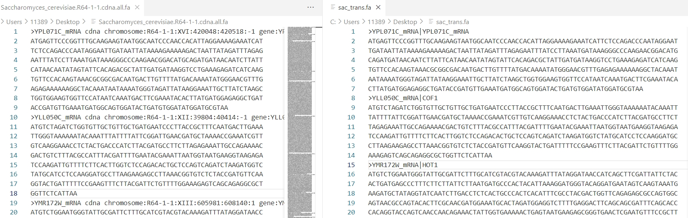

wget https://ftp.ensembl.org/pub/release-113/fasta/saccharomyces_cerevisiae/cdna/Saccharomyces_cerevisiae.R64-1-1.cdna.all.fa.gz
zless Saccharomyces_cerevisiae.R64-1-1.cdna.all.fa.gz
>YPL071C_mRNA cdna chromosome:R64-1-1:XVI:420048:420518:-1 gene:YPL071C gene_biotype:protein_coding transcript_biotype:protein_coding description:Putative protein of unknown function; green fluorescent protein (GFP)-fusion protein localizes to both the cytoplasm and the nucleus [Source:SGD;Acc:S000005992]
ATGAGTTCCCGGTTTGCAAGAAGTAATGGCAATCCCAACCACATTAGGAAAAGAAATCAT
TCTCCAGACCCAATAGGAATTGATAATTATAAAAGAAAAAGACTAATTATAGATTTAGAG
AATTTATCCTTAAATGATAAAGGGCCCAAGAACGGACATGCAGATGATAACAATCTTATT
CATAACAATATAGTATTCACAGACGCTATTGATGATAAGGTCCTGAAAGAGATCATCAAG
TGTTCCACAAGTAAACGCGGCGACAATGACTTGTTTTATGACAAAATATGGGAACGTTTG
AGAGAAAAAAGGCTACAAATAATAAAATGGGTAGATTATAAGGAAATTGCTTATCTAAGC
TGGTGGAAGTGGTTCCATAATCAAATGACTTCGAAATACACTTATGATGGAGAGGCTGAT
ACCGATGTTGAAATGATGGCAGTGGATACTGATGTGGATATGGATGCGTAA
>YLL050C_mRNA cdna chromosome:R64-1-1:XII:39804:40414:-1 gene:YLL050C gene_biotype:protein_coding transcript_biotype:protein_coding gene_symbol:COF1 description:Cofilin, involved in pH-dependent actin filament depolarization; binds both actin monomers and filaments and severs filaments; involved in the selective sorting, export of the secretory cargo from the late golgi; genetically interacts with pmr1; thought to be regulated by phosphorylation at SER4; ubiquitous and essential in eukaryotes [Source:SGD;Acc:S000003973]
ATGTCTAGATCTGGTGTTGCTGTTGCTGATGAATCCCTTACCGCTTTCAATGACTTGAAA
TTGGGTAAAAAATACAAATTTATTTTATTCGGATTGAACGATGCTAAAACCGAAATCGTT
GTCAAGGAAACCTCTACTGACCCATCTTACGATGCCTTCTTAGAGAAATTGCCAGAAAAC
GACTGTCTTTACGCCATTTACGATTTTGAATACGAAATTAATGGTAATGAAGGTAAGAGA
TCCAAGATTGTTTTCTTCACTTGGTCTCCAGACACTGCTCCAGTCAGATCTAAGATGGTC
TATGCATCCTCCAAGGATGCCTTAAGAAGAGCCTTAAACGGTGTCTCTACCGATGTTCAA
GGTACTGATTTTTCCGAAGTTTCTTACGATTCTGTTTTGGAAAGAGTCAGCAGAGGCGCT
GGTTCTCATTAA2 Extract sequence
2.1 Preparing Transcript Sequences
The riboTransVis package provides several functions to extract transcript and CDS sequences, facilitating seamless integration with downstream analyses within the package.
2.2 Renaming Transcript Sequences from Ensembl
If you are aligning reads to the transcriptome and working with transcriptome-aligned BAM files, riboTransVis requires transcript sequence names in a specific format: transcript_ID|gene_name.
If you downloaded transcriptome sequence files from the Ensembl database, you can use the prepare_transcript_file() function to convert the sequence names to the required format. Below is an example using a transcriptome FASTA file of S. cerevisiae (yeast) downloaded from Ensembl:
Simply providing the input FASTA file and specifying the output FASTA file is sufficient to complete the conversion:
library(riboTransVis)
prepare_transcipt_file(transcript_fa = "../Saccharomyces_cerevisiae.R64-1-1.cdna.all.fa",
output_path = "../sac_trans.fa")The figure below shows a comparison of the transcriptome FASTA file before and after ID conversion:

2.3 Extracting the Transcriptome File
Alternatively, riboTransVis provides the get_transcript_sequence() function, which can be used to extract all transcript sequences based on the genome FASTA file and the corresponding GTF annotation file.
Since most genes in yeast species lack annotated UTR regions, it is often beneficial to extend the transcript sequences upstream and downstream to facilitate Ribo-seq–related analyses. This can be done using the extend parameter. Typically, an extension of 50 nucleotides is sufficient.
get_transcript_sequence(genome_file = "../../index-data/Saccharomyces_cerevisiae.R64-1-1.dna.toplevel.fa",
gtf_file = "../../index-data/Saccharomyces_cerevisiae.R64-1-1.112.gtf",
feature = "exon",
extend = T,
extend_upstream = 50,
extend_downstream = 50,
output_file = "sac_trans.fa")2.4 Extracting CDS Sequences
In certain analyses, coding sequence (CDS) information may be required. You can extract the CDS regions from all transcripts by setting feature = “CDS”:
get_transcript_sequence(genome_file = "../../index-data/Saccharomyces_cerevisiae.R64-1-1.dna.toplevel.fa",
gtf_file = "../../index-data/Saccharomyces_cerevisiae.R64-1-1.112.gtf",
feature = "CDS",
output_file = "sac_cds.fa")2 Extract sequence – RiboTransVis 2 Extract sequence – RiboTransVis 2 Extract sequence – RiboTransVis RiboTransVis